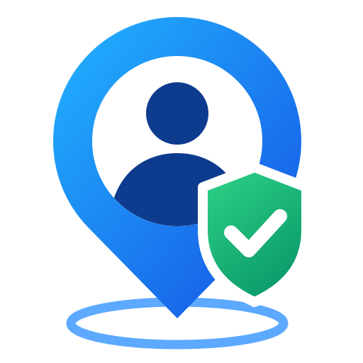

Xodim Nazorat
Maxfiylik siyosati
Kuchga kirgan sana: 2026-yil 6-oktabr
Xodim Nazorat ilovasi ("Ilova") — Shamsiddinkhon Labs tomonidan ishlab chiqilgan, tashkilotlar o'z xodimlarining ish vaqti va tashriflarini qayd etishi uchun mo'ljallangan ish vositasi. Ilovadan faqat tashkilot administratori tasdiqlagan xodimlar foydalanadi.
1. Qanday ma'lumotlar to'planadi
| Ma'lumot | Qachon | Maqsad |
|---|---|---|
| Ism-familiya, telefon raqami, lavozim | Ro'yxatdan o'tishda | Xodimni aniqlash, tizimga kirish |
| Aniq joylashuv (GPS), shu jumladan fon rejimida | Faqat ish vaqtida — ish kuni boshlangandan yakunlangunicha | Tashriflarni tasdiqlash, rahbarga xodim joylashuvini ko'rsatish |
| Selfi (kamera orqali olingan rasm) | Ish kunini boshlash, tashkilotga kelish, ishga qaytishda | Shaxsni va hozir bo'lganlikni tasdiqlash |
| Batareya darajasi, GPS aniqligi, soxta joylashuv belgisi | Joylashuv bilan birga | Ma'lumotlar ishonchliligini baholash |
| Tashkilot mas'ul shaxsining ismi va telefoni | Xodim kiritganda | Tashrif hisobi |
Ilova ish vaqtidan tashqarida joylashuv to'plamaydi. Ish kuni yakunlanganda yoki grafik bo'yicha ish vaqti tugaganda kuzatuv avtomatik to'xtaydi. Kuzatuv yoqilganda telefonda doimiy bildirishnoma ko'rsatiladi.
2. Rozilik
Joylashuv kuzatuvi yoqilishidan oldin Ilova xodimga nima to'planishini tushuntiradi va rozilik so'raydi. Telefon sozlamalaridan joylashuv ruxsatini istalgan vaqtda o'chirish mumkin — bu holat rahbarga ko'rinadi.
3. Ma'lumotlardan foydalanish
Ma'lumotlar faqat ish vaqti va tashriflarni hisobga olish, rahbarga hisobot va ogohlantirishlar (kechikish, tashrif bajarilmagani, GPS o'chirilgani) uchun ishlatiladi. Tizim faqat holatlarni belgilaydi — xodimga oid qarorlarni rahbar qabul qiladi.
Ma'lumotlar reklama uchun ishlatilmaydi, sotilmaydi va uchinchi shaxslarga berilmaydi. Bildirishnomalar Telegram bot orqali faqat xodimning o'z Telegram hisobiga yuboriladi.
4. Saqlash va himoya
Ma'lumotlar tashkilot serverida saqlanadi va shifrlangan (HTTPS) ulanish orqali uzatiladi. Ma'lumotlarga faqat huquqi bor rahbarlar o'z ko'rish doirasi (bo'lim yoki biriktirilgan xodimlar) bo'yicha kiradi. Server kunlik zaxira nusxasini oladi.
5. Saqlash muddati va o'chirish
Xodim ishdan ketganda yoki talab qilganda uning hisobi va ma'lumotlari (joylashuvlar, rasmlar, ish kunlari) administrator tomonidan butunlay o'chiriladi. O'chirish so'rovi uchun: shamsiddinkhon@gmail.com.
6. Bolalar
Ilova 18 yoshdan kichiklarga mo'ljallanmagan.
7. Aloqa
Shamsiddinkhon Labs — shamsiddinkhon@gmail.com. Siyosat o'zgarsa, yangi versiya shu sahifada e'lon qilinadi.
Privacy Policy
Effective date: October 6, 2026
Xodim Nazorat (the "App") is a workforce tool developed by Shamsiddinkhon Labs that lets organizations record their employees' working hours and site visits. Only employees approved by their organization's administrator can use the App.
1. Data we collect
| Data | When | Purpose |
|---|---|---|
| Full name, phone number, job title | At registration | Identify the employee, sign-in |
| Precise location (GPS), including in the background | Only during working hours — from the start of the workday until it ends | Verify site visits, show the employee's location to their manager |
| Selfie (photo taken with the camera) | When starting the workday, checking in at a site, returning to work | Confirm identity and presence |
| Battery level, GPS accuracy, mock-location flag | Together with location | Assess data reliability |
| Name and phone of the client organization's contact person | When entered by the employee | Visit records |
The App does not collect location outside working hours. Tracking stops automatically when the workday is ended or scheduled working hours are over. A persistent notification is shown while tracking is active.
2. Consent
Before location tracking starts, the App explains what is collected and asks for the employee's consent. Location permission can be revoked at any time in the phone settings; the manager will see that location is off.
3. How we use data
Data is used only for working-time and visit records, manager reports and alerts (lateness, missed visits, GPS turned off). The system only flags events — decisions are made by the manager.
Data is not used for advertising, not sold and not shared with third parties. Notifications are sent via a Telegram bot only to the employee's own Telegram account.
4. Storage and security
Data is stored on the organization's server and transmitted over encrypted (HTTPS) connections. Only authorized managers can access data within their scope (department or assigned employees). The server makes daily backups.
5. Retention and deletion
When an employee leaves or on request, their account and data (locations, photos, workdays) are permanently deleted by the administrator. To request deletion, contact shamsiddinkhon@gmail.com.
6. Children
The App is not intended for anyone under 18.
7. Contact
Shamsiddinkhon Labs — shamsiddinkhon@gmail.com. Changes to this policy will be published on this page.